Vigilia de Ceniza — Press kit
Soulslike pixel art de vista cenital para iPhone y iPad. Un proyecto independiente de NCS Gaming. Sin anuncios, sin compras, sin conexión. Disponible en el App Store desde el 22 de octubre de 2026 (versión 1.0).
Para iPhone y iPad · pago único, sin anuncios ni compras
Contacto de prensa: contacto@ncsconsulting.cl Web: Códice del Velador · Privacidad · Soporte · Instagram @ncs_developer
Este kit se puede citar y reproducir libremente en reseñas, artículos y vídeos. Las imágenes de esta página y las capturas de la ficha del App Store son del autor (arte generado con su cuenta de PixelLab, ilustraciones, icono y rótulos propios) y pueden redistribuirse con la reseña. Ver «Licencias» al final.
Ficha técnica
| Título | Vigilia de Ceniza |
| Subtítulo (App Store) | ES: Soulslike pixel art oscuro · EN: A soulslike of ash and wax |
| Género | Acción / Rol (soulslike, vista cenital, pixel art) |
| Plataformas | iPhone y iPad (app universal), iOS/iPadOS 16.0 o posterior, iPhone 11 o posterior |
| Precio | 3,99 € (pago único). Sin anuncios, sin compras dentro de la app, sin suscripción. Precio de lanzamiento la primera semana. |
| Idiomas | Español, inglés, francés, alemán, italiano, portugués y ruso (textos y narración grabada en los 7) |
| Conexión | No necesita. No tiene cuentas, analítica ni recopila datos («Datos no recopilados» en el App Store). |
| Controles | Táctiles para dos pulgares (tamaño y opacidad ajustables, botones grandes) y mando (perfil extendido: Xbox, PlayStation, MFi). En iPad la vista y los controles se adaptan al tamaño físico de la pantalla. |
| Orientación | Apaisada (se puede voltear). |
| Edad | 13+. Sangre y lenguaje crudo opcionales, apagados por defecto, con confirmación de mayoría de edad en el aparato. |
| Motor | Godot Engine 4 |
| Desarrollador | Nicolás Cuevas, desarrollador independiente |
| Versión | 1.0 |
| Bundle ID | iOS: com.ncsgaming.vigilia · Android: com.ncsgaming.vigiliadeceniza |
Accesibilidad
- Asistencia (Ajustes → Accesibilidad), apagada por defecto y sin bloquear logros: daño recibido 75 % o 50 %, ventanas de esquiva y parry ×1,3, velocidad del juego 90 % u 80 %, rodar sin aguante y conservar la mitad de la Ceniza al morir. Se pueden combinar.
- Temblor de pantalla y destellos reducibles o desactivables; pausa al golpear ajustable.
- Texto grande, subtítulos lentos y con fondo; modo para daltonismo (avisos de golpe retrasado con forma y color distintos).
- Opacidad y tamaño de los controles táctiles; teclas y botones configurables.
- Guía de ayudas en tres niveles (Completa / Mínima / Ninguna), adaptativa: si el jugador muere muchas veces seguidas el juego ofrece más ayuda.
- Narración del prólogo con voz grabada en cada idioma (desactivable).
Características
Combate deliberado
- Cada golpe, cada rodada y cada bloqueo cuestan aguante. Esquiva en el momento justo, desvía con el escudo y contraataca.
- Ataques legibles: cada golpe enemigo se anuncia con un destello y un sonido justo antes de llegar. Si lo lees, lo evitas.
- Golpes ligeros y fuertes (y fuerte cargado), parry, contraataque, puñalada por la espalda y rodada ligera o pesada según el peso del equipo.
- Los muertos aprenden: los enemigos recuerdan tus costumbres y cambian su forma de pelear.
Estirpe, origen y arma
- 5 estirpes × 6 orígenes. Cada estirpe da una ventaja con su precio: un parry más largo a cambio de menos vida, no arder a cambio de curarte peor...
- Cuerpo de hombre o de mujer y nombre propio para tu Insomne.
- 21 armas, 8 escudos y 9 amuletos para mezclar: un bárbaro con daga, un paria con báculo.
Jefes con historia
- Once jefes, cada uno con su presentación, su voz y su segunda fase: el Rey del Túmulo que espera un relevo que nunca llegó, la Plañidera que lloró por cada vela, el Alado de Hollín que no puede soltar su antorcha...
- El primero espera en el Camposanto: el Precipitado de la Retorta, que salió del laboratorio del Alquimista y ya no es él.
Un mundo interconectado
- Nueve zonas unidas por atajos, escaleras secretas y hogueras: camposanto, osario, campanario, cisterna inundada, horno de velas, criptas y más.
- Puzles con reglas visibles, trampas, invasiones de Sombras y personajes con destinos que tú decides.
- Tres finales y nuevos ciclos para volver a empezar más fuerte.
La Ceniza
- Al morir, tu Ceniza queda donde caíste. Vuelve a por ella antes de caer otra vez.
- Sube de nivel en las hogueras, forja armas, lleva amuletos que dan y quitan y refuerza tu Vasija de Ceniza para curarte más veces.
Hecho para iPhone y iPad
- Tutorial para aprender los controles (en él no se puede morir), tres ranuras de partida, 7 idiomas.
- Diario de Velador: doce recuerdos que se emborronan si mueres demasiado sin descansar.
- Mapa de la zona con solo lo que has visto; viaje entre hogueras; logros por partida.
El juego en 100 palabras
Vigilia de Ceniza es un soulslike de vista cenital y pixel art en el que nadie duerme. Eres un Insomne, un antiguo Velador que encendía las piras donde ardían los que, como él, no podían dormir. Mueres y vuelves; tu Ceniza se queda donde caíste. Cada golpe, rodada y bloqueo cuesta aguante; cada ataque enemigo se anuncia antes de llegar, y los enemigos aprenden tus costumbres. Once jefes con voz y segunda fase, nueve zonas unidas por atajos, cinco estirpes y seis orígenes, tres finales. Un proyecto independiente para iPhone y iPad, sin anuncios ni compras, con Asistencia opcional en Accesibilidad.
In 100 words (EN)
Vigilia de Ceniza is a top-down pixel-art soulslike in which no one sleeps. You are one of the Sleepless, a former Warden who lit the pyres where those who, like him, could not sleep were burned. You die and return; your Ash stays where you fell. Every swing, roll and block costs stamina; every enemy attack is announced before it lands, and enemies learn your habits. Eleven bosses with a voice and a second phase, nine areas linked by shortcuts, five lineages and six origins, three endings. An independent project for iPhone and iPad, with no ads or purchases and optional Assistance in Accessibility.
Sobre el autor
Nicolás Cuevas, desarrollador independiente (NCS Gaming). Vigilia de Ceniza es su primer juego publicado; lo dirigió de principio a fin, con la colaboración de su hijo, autor de la idea y el dibujo original del Alado de Hollín. Para el arte y las voces se usaron herramientas con licencia comercial, que figuran en los créditos del juego.
Contacto: contacto@ncsconsulting.cl
Imágenes del kit
Solo recursos del propio juego, en PNG sin suavizado. Descargar todo (ZIP).

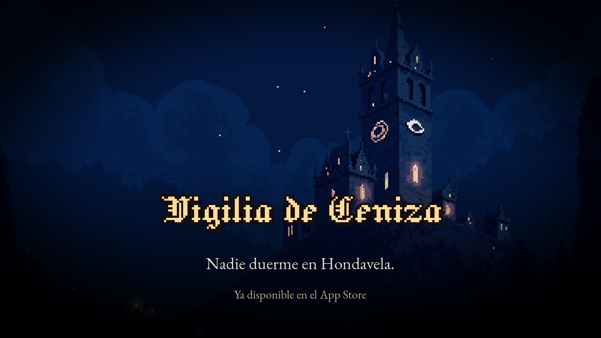

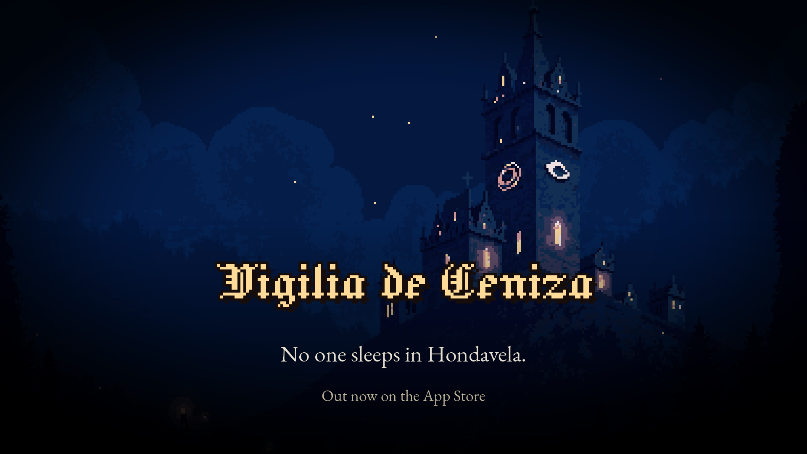

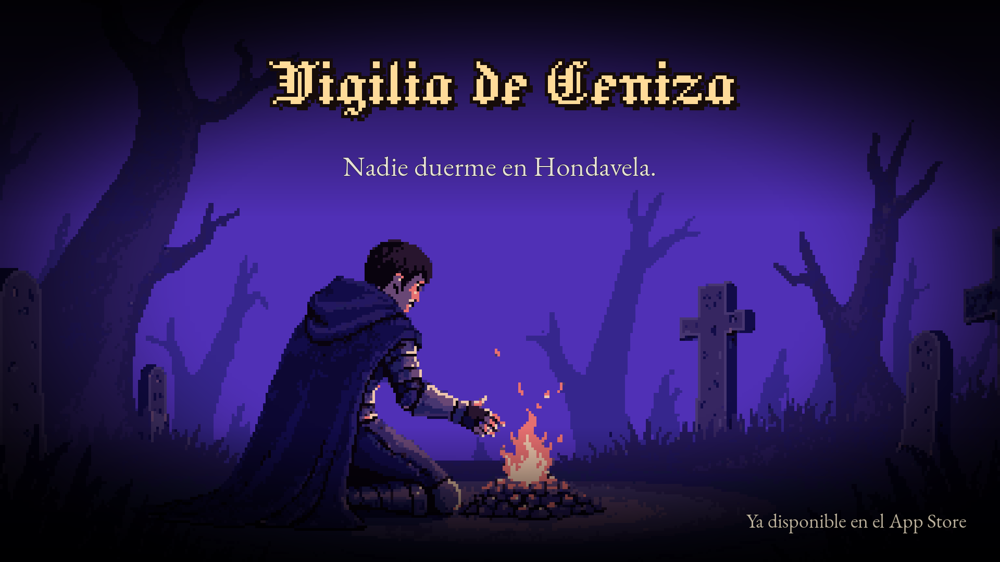

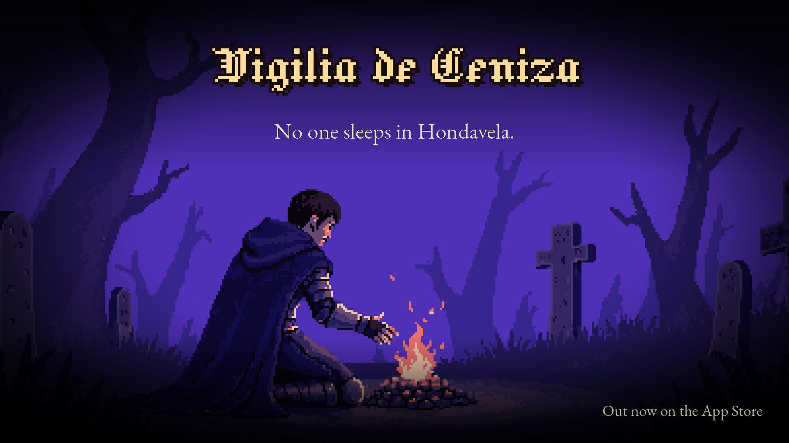

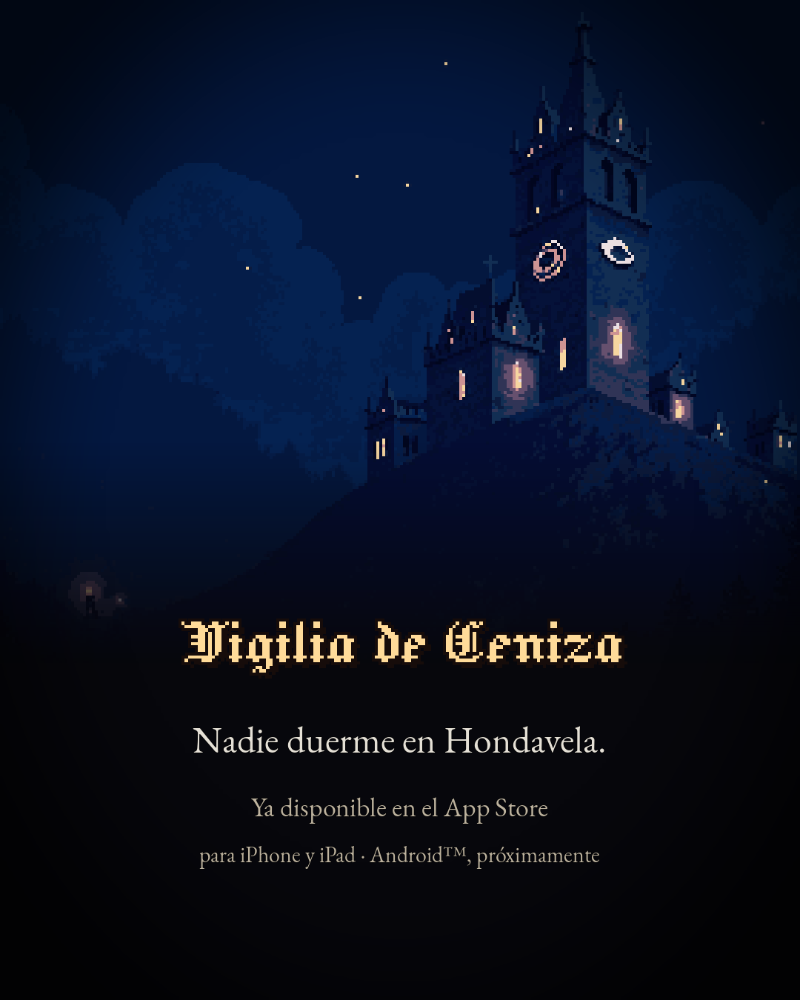


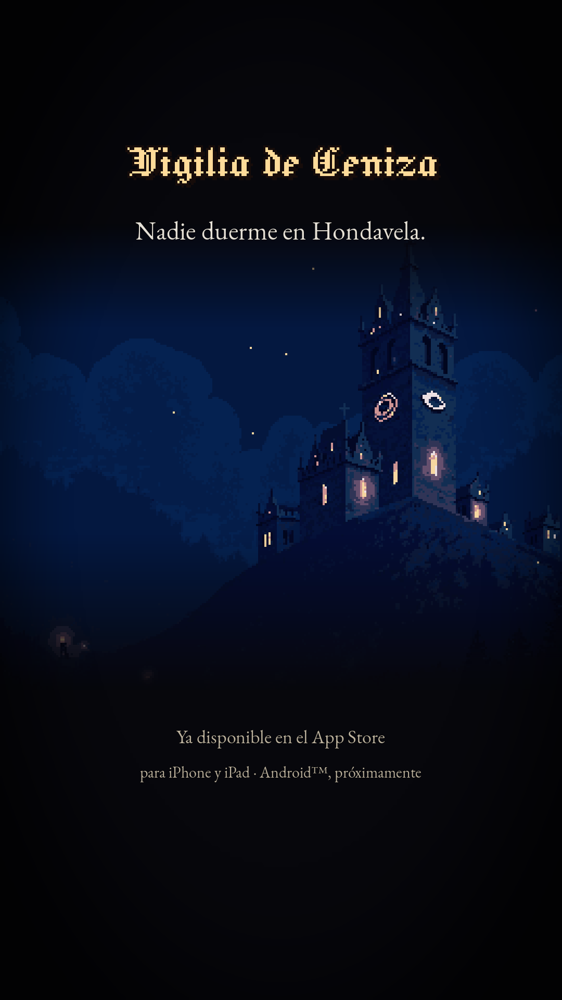

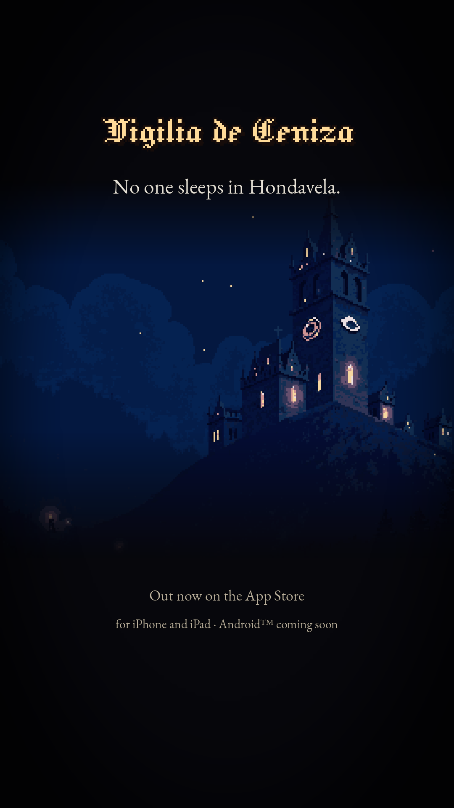

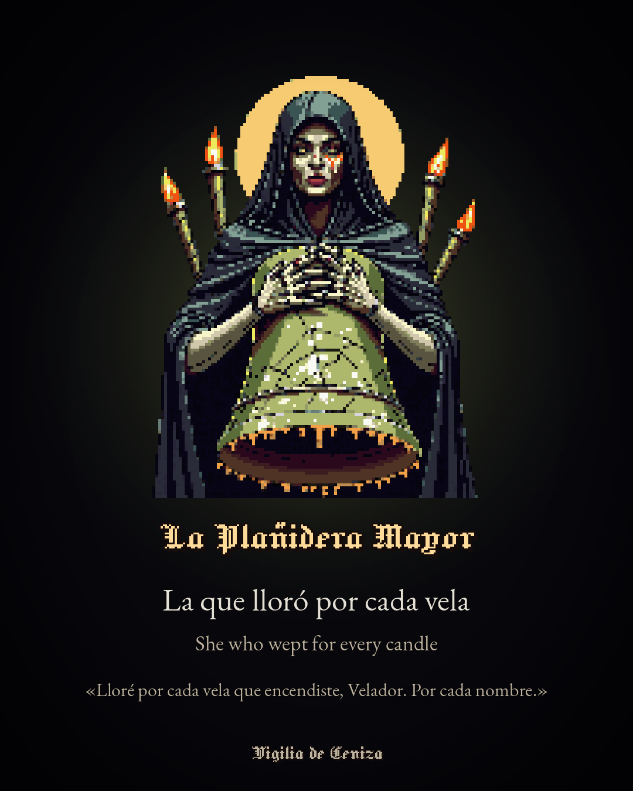

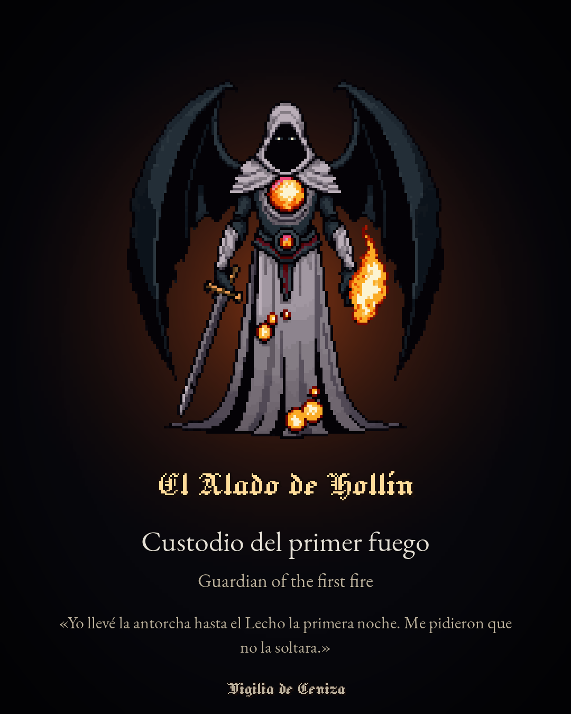

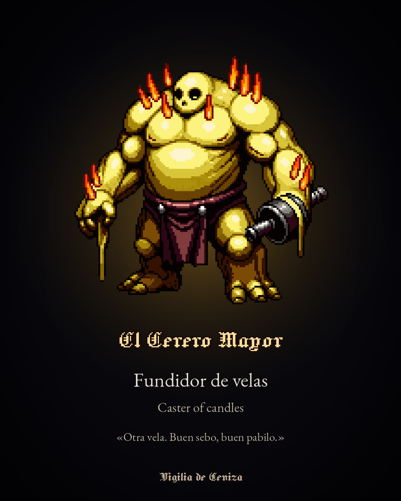

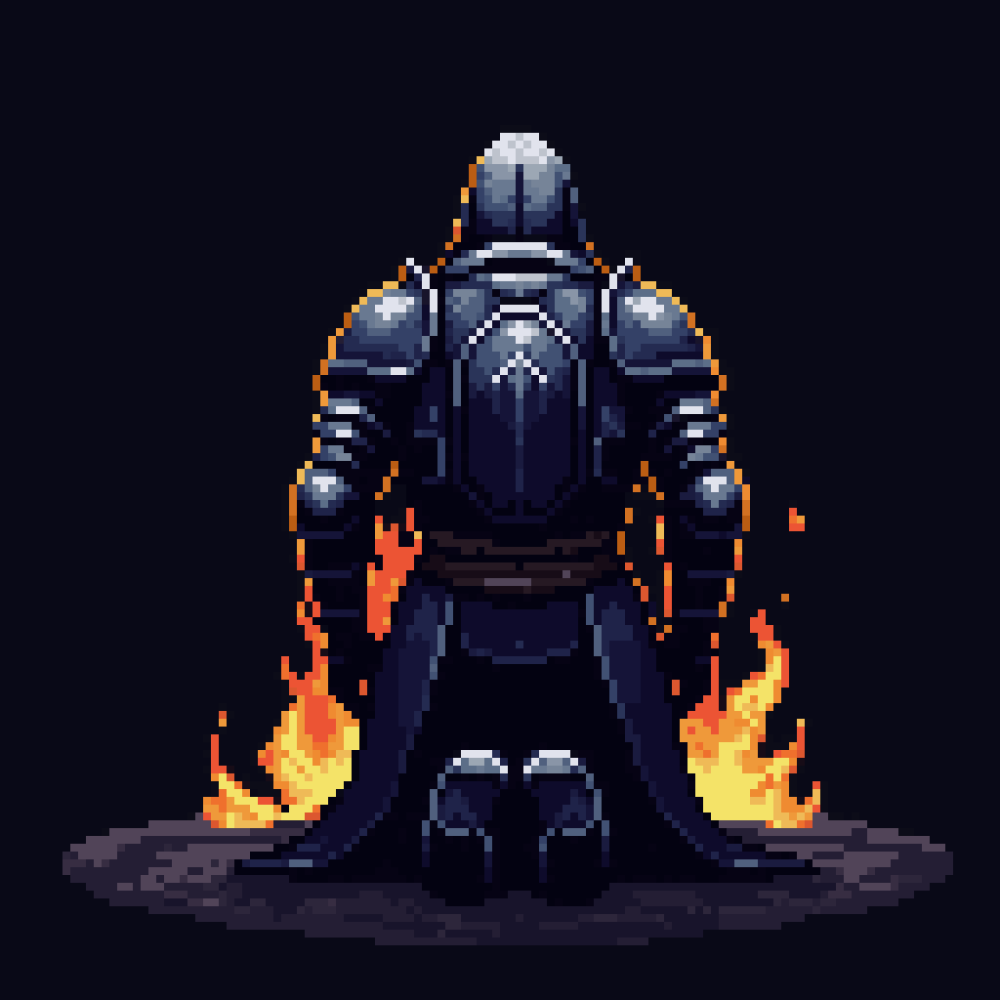

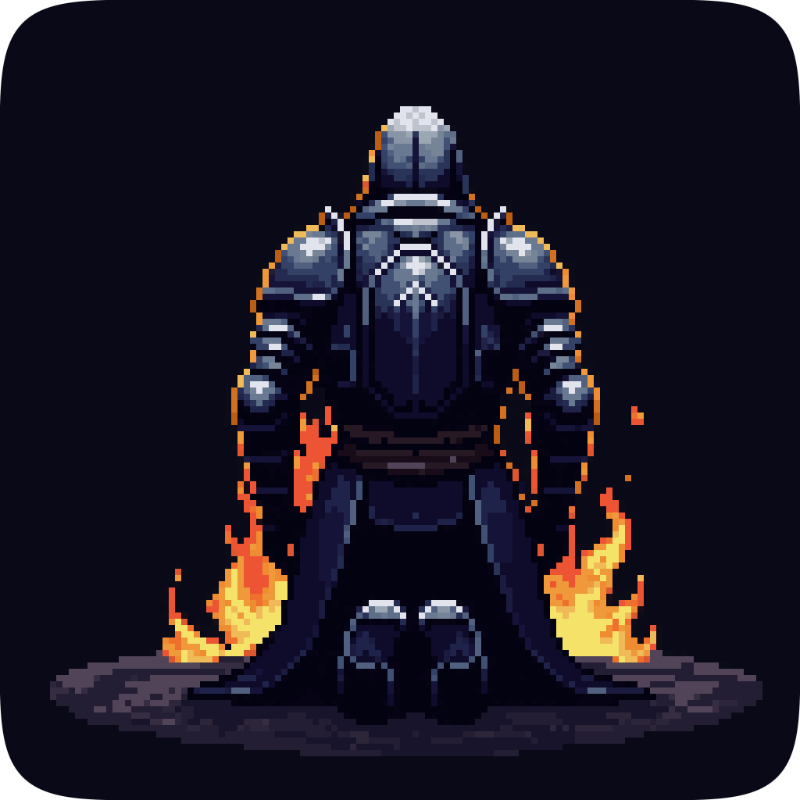

Vídeo: Tráiler 1080p (ES) · Tráiler 1080p (EN) · Tráiler vertical (ES) · Tráiler vertical (EN).
Capturas: las de la ficha del App Store.
Licencias del material promocional
- Ilustraciones, sprites del Insomne, enemigos propios y jefes (incluidos la Plañidera, el Alado y el Cerero), suelos, decorados e iconos: generados con PixelLab en la cuenta de pago del autor (uso comercial). El Alado de Hollín es idea y dibujo original del hijo del autor.
- Música del tráiler: «Dark Fantasy», ElevenLabs Music, plan de pago del autor (uso comercial). Temas de zona y de jefe: sintetizados por scripts propios.
- Fuentes: Jacquard 12 y EB Garamond, SIL Open Font License 1.1.
- Exclusión: los sprites de los packs Mourncrest (Core Systems Asset Factory) tienen licencia de uso en el juego pero no de redistribución. Por eso no aparecen en primer plano en ninguna imagen fija de este kit; en vídeo de juego real pueden verse de paso. Al preparar material nuevo, respetar la misma regla.